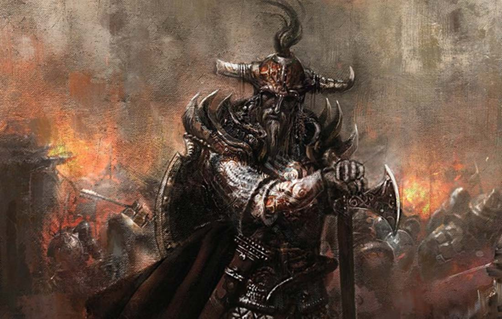

In the time of the Viking Age Sweden was fragmented into many petty kingdoms (also known as earldoms) ruled each by a local chieftain, although, according to semi-legendary history, there might have been renowned monarchs who ruled parts of the realms of what is now Sweden (along with Denmark and Norway) such as Ragnar Lothbrok or Bjorn Ironside (both allegedly belonging to the Royal House of Munso) at certain times. The Swedes, then known as Varangians, or Rus.
-
700 A.C
-
800 A.C

-
900 A.C
-
1000 A.C

-
1130 A.C
 -
1150 A.C